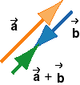

and
and  tip to
tail. The tail end of vector
is joined with the tip of vector . The sum is shown in green.
tip to
tail. The tail end of vector
is joined with the tip of vector . The sum is shown in green.
Yes, choice (c) is correct. The diagram below shows how the sum
can be constructed by joining the two vectors and tip to
tail. The tail end of vector
is joined with the tip of vector . The sum is shown in green.

The direction of the sum is from the free tail end to the free tip of the two vectors.
For better visibility, the vectors are not drawn on top of each
other, but side-by-side. So the tail of vector is not actually joined with the
tip of vector in the
diagram. However, by moving the vectors sideways in your mind,
you can imagine that this can be done in principle.
Suppose these vectors are displacements. Then the sum + is interpreted as the displacement that is
equal to the two displacements and
carried out in succession.